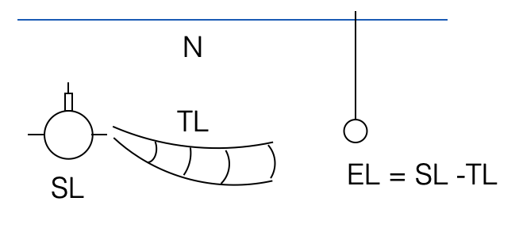
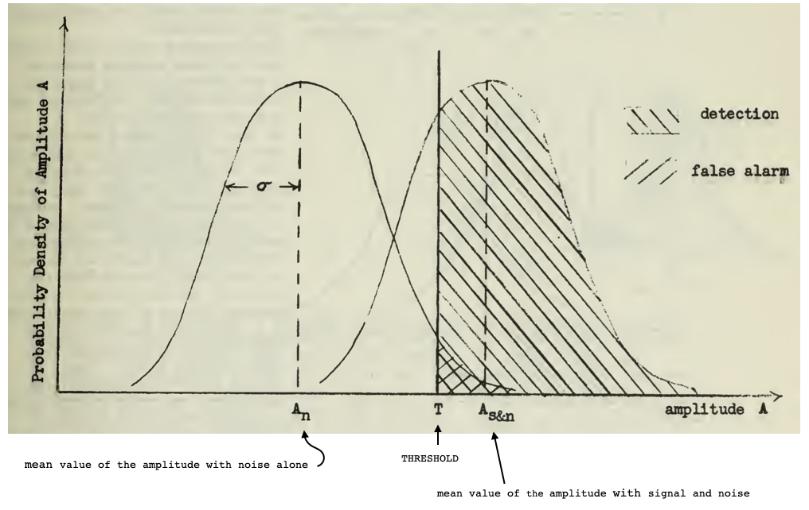
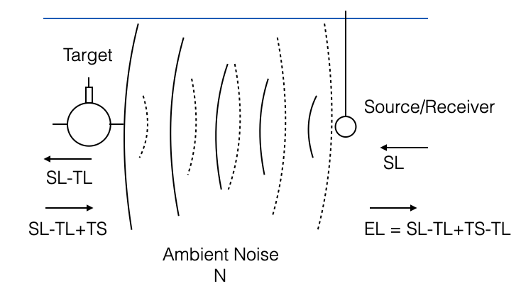
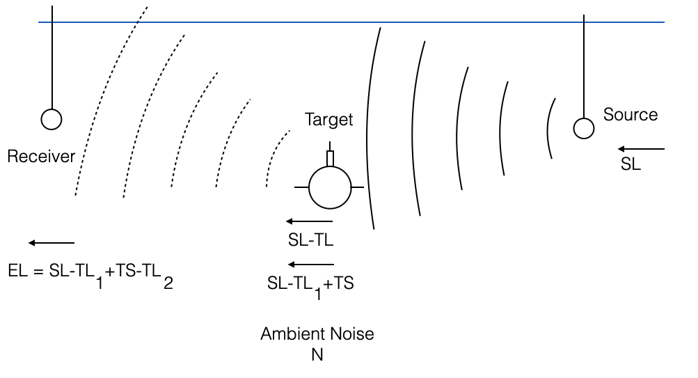
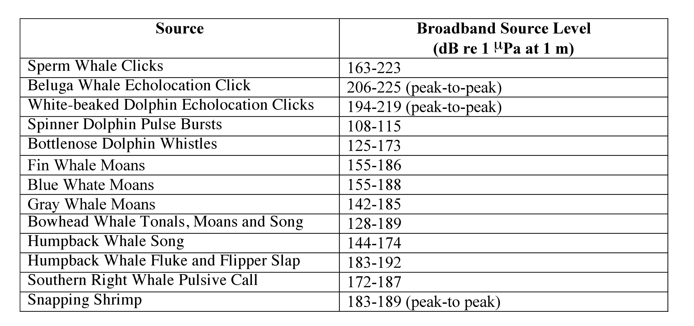
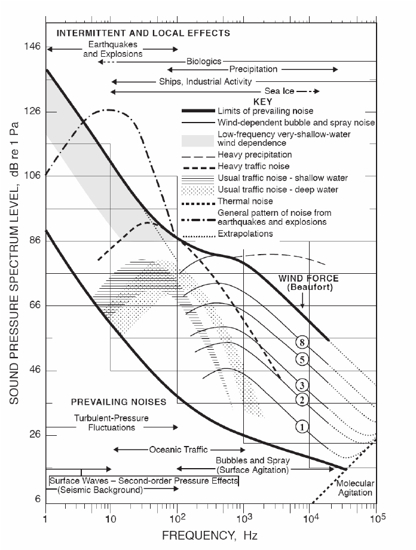
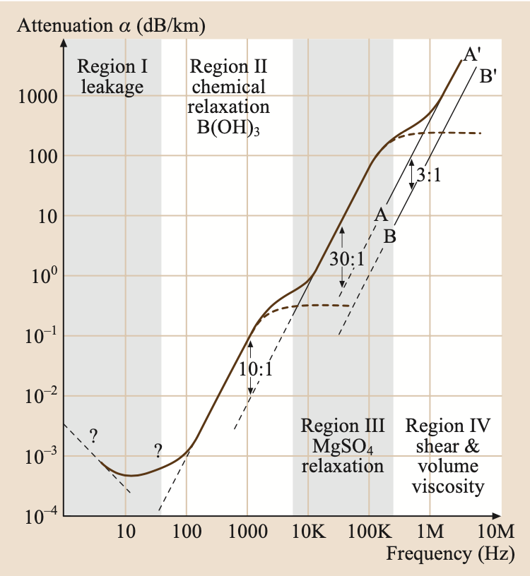

import numpy as np
for R in range(1000, 10000, 1000):
SE = 20*np.log10(R) + 5e-3*R - 100
if abs(SE) < 5:
print(f'SE:{SE}, max range: {R}')
breakSE:-1.020599913279625, max range: 5000The “sonar equation” is a systematic way of estimating the expected signal-to-noise ratios for sonar (SOund Navigation And Ranging) systems. - The signal-to-noise ratio determines whether or not a sonar will be able to detect a signal in the presence of background noise in the ocean. - It takes into account the source level, sound spreading, sound absorption, reflection losses, ambient noise, and receiver characteristics. - The sonar equation is used to estimate the expected signal-to-noise ratios for all types of sonar systems. - Slightly different versions of the sonar equation are used for active (echo-ranging) and passive sonar systems.
Fundamental equations through which we can measure the performance of an acoustic system (a SONAR).
A sonar system can be influenced by a number of factors: - environmental conditions (ambient noise, acoustic loss, etc.) - how the sonar system is built (geometry, frequency, array length, etc.)
The combination of these aspects give us the overall performance of a specific system in a specific environment
For ex. - Bathymetric survey: the right sonar depends on the expected environment when I need to measure the bathymetry in the area of interest
What this means is that the datasheet is usually not enough to characterise the operational performance of the sonar
Note: - acoustic intensity depends on frequency, but we will see that in the sonar equations frequency is not explicit - what this means is that applying the same equations at different frequencies we obtain different results
|  |
Tonals (monofrequency components)
\(SL\): Level of acoustic intensity 1m from the source
Broadband noise
\(SL = SSL + 10\log B\)
where:
\[ EL = SL - TL \]
The Signal-to-Noise ratio in dB:
\[ SNR = (SL - TL) - N \]
We are interested in listening to some signal (EL) which is due to the sound emitted by the source less than what is loss due to propagation.
Given that there is also Ambient noise, when can I detect the signal from the Ambient noise?
We define a Detection Threshold (DT) (typically DT=0, SNR > 0 dB)
The detection process consists of designating a threshold which, when exceed, causes a detection to be recorded.
If the signal is much stronger than the noise, it is clear that a threshold can be defined that will allow valid signals to be recorded while ignoring the noise.
However, when the signal and noise are of comparable size, any threshold that will catch a reasonable number of valid signals will also record “detections” when a valid signal is absent.
|  |
Figure: Adapted from An introduction to the sonar equations with applications, 1976, pag. 81
\[ SE = SNR - DT \]
|  |
Terminology comes from military applications (active sonars developed to hunt for submarines)
For us, target is anything we would like to insonify
The backscatter signal depends on the target
\[ SNR = EL - (N+RL) \]
And the Signal Eccess is
\[ SE = SNR - DT \]
A further comment on the Signal-to-Noise Ratio:
This means:
Received signal \(s\): \[ S = 10\log|s| \]
Ambient noise \(n\): \[ N = 10\log|n| \]
Reverberation level \(rl\): \[ RL = 10\log|rl| \]
Signal to noise ratio \[ snr = \frac{|s|}{|n+rl|} \Rightarrow SNR = 10\log\frac{|s|}{|n+rl|} \Rightarrow S-10\log(|n+rl|) \]
Let’s analyse \(10\log(|n+rl|)\).
\[ 10\log(|n+rl|) \le 10\log(|n|+|rl|) \]
Let’s consider now the case where the reverberation level is less than the noise (the other case would be the same):
\[ |rl| \le |n| \Rightarrow |rl| = k|n|\;\; k \in [0,1] \]
This means that
\[ 10\log(|n|+|rl|) = 10\log((k+1)|n|) = N + 10\log(k+1) \;\; k \in [0,1] \]
\[ N + 10\log(k+1) = N+10\log2 = N + 3 dB \]
This means that \[10\log(|n|+|rl|) \in [N, N+3]\]
\[10\log(|n|+|rl|) \in [RL, RL+3]\]
With respect to the larger between \(N\) and \(RL\), the intensity in dB of their sum, can only be 3dB more than the maximum between \(N\) and \(RL\) (which is when they both have the same value). Otherwise is less than 3dB.
Three dB is the usual approximation level that we use.
In practise, in most cases we can neglect one of the two terms. In the worst case scenario where the two levels are comparable we add 3dB.
We talk about: - Noise limited environments when the ambient noise is prevalent \(|rl| \le |n|\). The SNR only depends on the ambient noise
For example, consider the case where the noise and the reverberation level have the same intensity level: - \(10\log(N)=60dB\) - \(10\log(RL)=60dB\)
In natural scale we need to sum them and they are equal:
\[ N_{tot} = N+RL=2N \rightarrow 10\log2N = 10\log N + 10\log2 \approx 60 + 3 = 10\log(|n|+|rl|) \]
If, for example, \(N>RL\), \(N+RL\) will be less than \(2N\), which means that the difference will be less than 3dB
In the sonar equation \(N+RL\) = 63 dB (not 120)
Often our systems are able to measure differences of 3dB..
This is a confusing way of representing \(N\) and \(RL\) in the sonar equation but it is standard terminology.
If we had: \(N=60dB\) and \(RL=40dB\)
A difference of \(20dB\) corresponds to two orders of magnitude, so \(RL\) is negligible and in the sonar equation \(N+RL\)=60dB
We are implicity assuming Reciprocity - Waves are linear - Environment does not change in time (it can change in space) - Propagation loss in both directions are the same
Active: there is a source of sound that transmits a signal
Bistatic: receiver is in a geomtric location that is different from the transmitter
Received signal: scattering from the target with some angle (there will be a scattering angle from the target to the receiver)
The receiver would receive also scattering from other surfaces or volumes present in the environment
|  |
\[ EL = SL - TL_1 - TL_2 + TS \]
\[ SNR = S - (N+RL) \]
\[ SE = SNR - DT \]
How can these equations determine the range of the system?
Let’s focus on a passive sonar (which is easier)
DT is fixed (chosen by the operator) and is the only parameter of the SONAR
SL is unknown
Let’s consider a specific example:
Deep waters, sound speed is a Munk profile, etc. (this means that we are in a specific area)
We want to listen to sound emitted by a marine mammal
|  |
|  |
|  |
At \(5kHz\), intrinsic attenuation is \(\alpha \approx 1 db/km\).
The geometric attenuation is \(GA \approx 20\log R\) where \(R\) is in metres. - If \(R=1000m\), \(GA=60dB\)
In this scenario, the main attenuation is geometric. This means:
\[ TL = 20\log R \]
I have everything I need to use the SONAR equations:
To have detection, we need \(SE \ge0\) and the maximum range where \(SE = 0\), which means:
\[ 20\log_{10} R = 100 \Rightarrow R = 10^5 m = 100 km \]
At this point we could fine tune it using the intrinsic attenuation. With a 100km propagation a \(5 dB/km\) (\(5\cdot 10^{-3} dB/m\)) loss becomes important.
\[ TL = 20\log R + 5\cdot10^{-3}R \]
The equation becomes:
\[ 20\log_{10} R + 5\cdot10^{-3}R = 100 \]
This is a transcendental equation. We can solve it trying a few values to get a maximum range of about 5km.
I can detect marine mammals up to 5km. I can change the DT to extend the maximum range, but I would increase the number of false alarms as well.